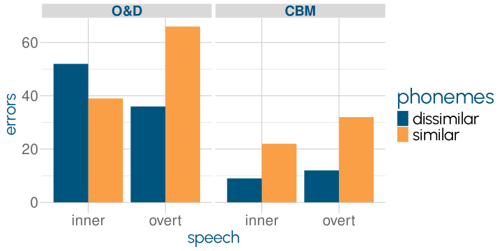
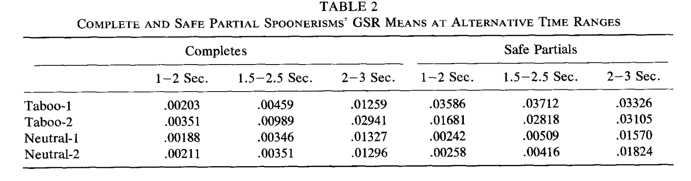
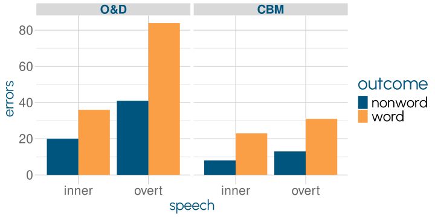
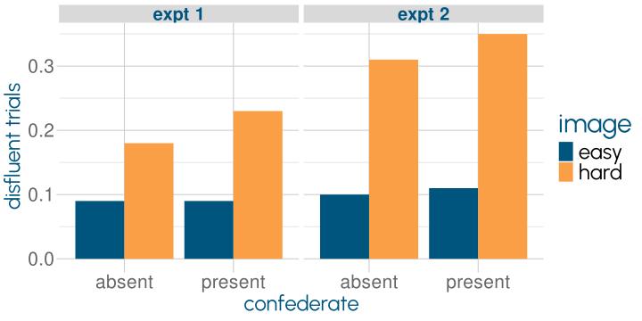
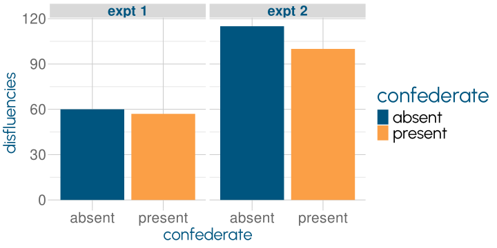

Inner Speech
Human Speech
Martin Corley
Psychology, PPLS
University of Edinburgh
2024-01-31
Spoonerisms Revisited
| phrase | error rate |
|---|---|
| tool carts | 56 |
| tool kits | 12 |
how come taboo errors aren’t made?
monitor the speech plan as well as the auditory signal
Motley et al. (1982)
The Inner Loop
Electric Evidence

What Does Inner Speech Sound Like?

| similar | dissimilar | |
|---|---|---|
| word outcome | lean reed reef leech | bean reed reef beach |
| nonword outcome | lean reed wreath leech | bean read wreath beach |
Lexical Bias
Phonemic Similarity
- inner speech may be “fully specified”, but jury is out
(see also Oppenheim & Dell, 2010)
Instant Repairs
I’ll see you at 10am in the m—10 am
| repair type | Levelt (1983) | Blackmer & Mitton (1991) |
|---|---|---|
| editing term | 17.4% | 38.5% |
| repetition | 7.2% | 34.4% |
| appropriateness | 30.2% | 10.7 % |
| different | 1.0% | 2.6 % |
| production-based | 41.6% | 3.0% |
| other | 2.5% | 10.7% |
for overt repairs, Blackmer & Mitton report 48.6% of cutoff-to-repair times <100ms, and 19.2% 0ms
Instant Repairs
Two Types of Um
covert repair
‘buying time’ to repair
er, uh, um
→ stutter
production difficulty
‘buying time’ to plan
er, uh, um
→ aphasia
Production Difficulty
‘buying time’ to plan
er, uh, um
Disfluencies Occur…
image: Dall-E 3
Lecture Topics
Schachter et al. (1991); image Dall-E 3
| sciences | socsi | humanities | |
|---|---|---|---|
| unique words in first 400 | 148.5 | 155.8 | 189.2 |
Just Noise?
two tracks of communication
primary track for the “official business”
collateral track to refer to the performance itself
uh and um serve different purposes
- more pauses after um
fillers are words (interjections) used on the collateral track
Just Noise?
- different realisations in different languages

Clark & Fox Tree (2002)
Are Disfluencies Intentional?
hard images should cause more disfluencies
only if there is someone to speak to
Hard Things Are Hard to Name
Finlayson & Corley (2012)
Interlocutor Makes No Difference
Finlayson & Corley (2012)
References
Blackmer, E. R., & Mitton, J. L. (1991). Theories of monitoring and the timing of repairs in spontaneous speech. Cognition, 39(3), 173–194. https://doi.org/cx68r2
Brennan, S. E., & Williams, M. (1995). The Feeling of Another\(\prime\)s Knowing: Prosody and Filled Pauses as Cues to Listeners about the Metacognitive States of Speakers. Journal of Memory and Language, 34(3), 383–398. https://doi.org/fsn8x9
Clark, H., & Fox Tree, J. E. (2002). Using uh and um in spontaneous speaking. Cognition, 84(1), 73–111. https://doi.org/d8fj23
Corley, M., Brocklehurst, P. H., & Moat, H. S. (2011). Error biases in inner and overt speech: Evidence from tongue twisters. Journal of Experimental Psychology: Learning, Memory, and Cognition, 37(1), 162–175. https://doi.org/fttr62
Finlayson, I. R., & Corley, M. (2012). Disfluency in dialogue: An intentional signal from the speaker? Psychonomic Bulletin & Review, 19(5), 921–928. https://doi.org/gq7ncc
Hartsuiker, R. J., & Kolk, H. H. J. (2001). Error Monitoring in Speech Production: A Computational Test of the Perceptual Loop Theory. Cognitive Psychology, 42(2), 113–157. https://doi.org/b625h2
Hartsuiker, R. J., & Notebaert, L. (2010). Lexical Access Problems Lead to Disfluencies in Speech. Experimental Psychology, 57(3), 169–177. https://doi.org/bkhp4s
Levelt, W. J. M. (1983). Monitoring and self-repair in speech. Cognition, 14(1), 41–104. https://doi.org/fg4ht2
Motley, M. T., Camden, C. T., & Baars, B. J. (1982). Covert formulation and editing of anomalies in speech production: Evidence from experimentally elicited slips of the tongue. Journal of Verbal Learning and Verbal Behavior, 21(5), 578–594. https://doi.org/dgxgqp
Oppenheim, G. M., & Dell, G. S. (2008). Inner speech slips exhibit lexical bias, but not the phonemic similarity effect. Cognition, 106(1), 528–537. https://doi.org/dqrw8p
Oppenheim, G. M., & Dell, G. S. (2010). Motor movement matters: The flexible abstractness of inner speech. Memory & Cognition, 38(8), 1147–1160. https://doi.org/dz29cr
Postma, A., & Kolk, H. (1993). The Covert Repair Hypothesis: Prearticulatory Repair Processes in Normal and Stuttered Disfluencies. Journal of Speech, Language, and Hearing Research, 36(3), 472–487. https://doi.org/gfpqb9
Roelofs, A. (2020). Self-Monitoring in Speaking: In Defense of a Comprehension-Based Account. Journal of Cognition, 3(1), 18. https://doi.org/gq7m99
Schachter, S., Christenfeld, N., Ravina, B., & Bilous, F. (1991). Speech disfluency and the structure of knowledge. Journal of Personality and Social Psychology, 60(3), 362–367. https://doi.org/cqvbwf
Severens, E., Janssens, I., Kühn, S., Brass, M., & Hartsuiker, R. J. (2011). When the brain tames the tongue: Covert editing of inappropriate language. Psychophysiology, 48(9), 1252–1257. https://doi.org/fvv5f2